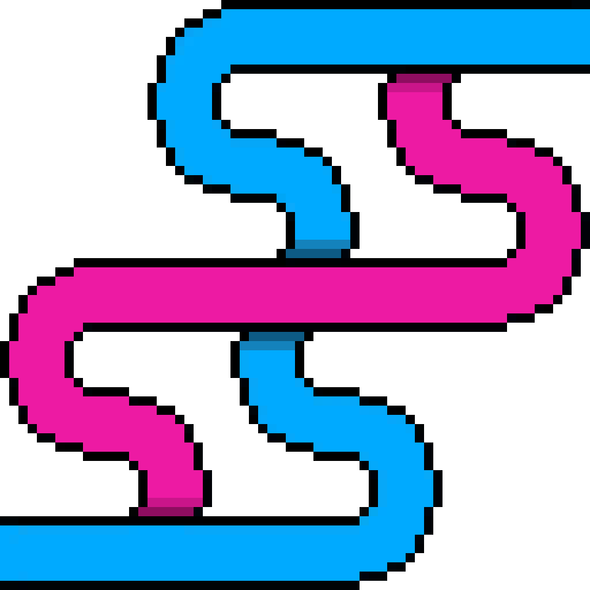
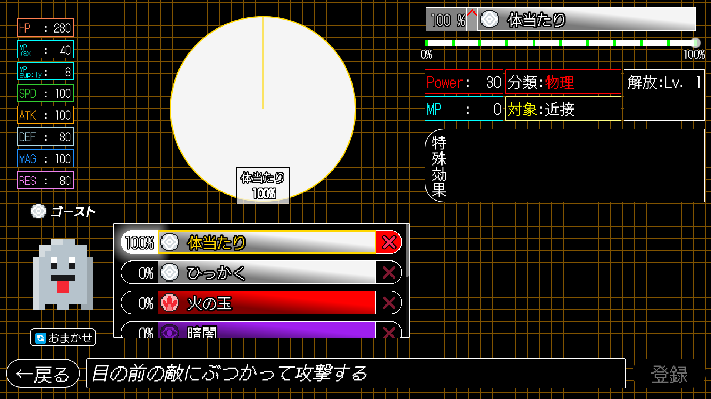
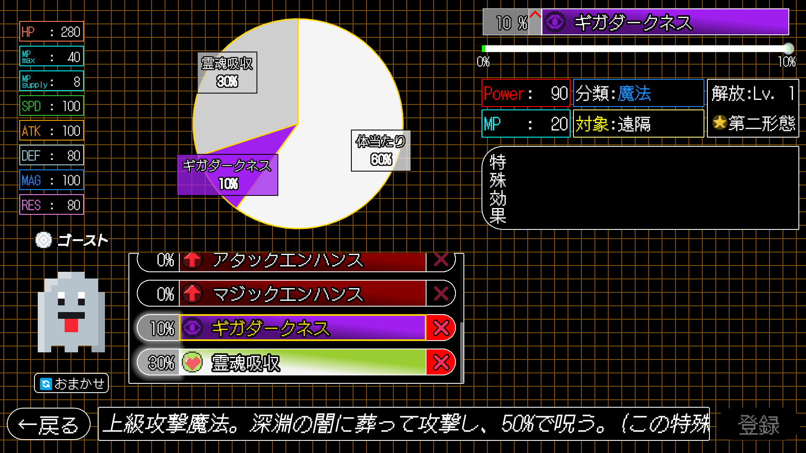

aomushi0710

| ゲームジャンル | 確率操作型コマンドバトルゲーム |
|---|---|
| 開発期間 | 2024年4月8日~現在開発中 |
| ゲームエンジン | Godot Engine 4.4.1 stable |
| 言語 | GDScript |
| 統合開発環境 | Godot内蔵スクリプトエディタ |
運が悪いだけで負けてしまったということは誰しもが経験してきたことでしょう。
多くのゲームに運の要素は必要不可欠。そのおかげで単調なゲームは存在せず、最後まで気が引けないあるいは最後まで諦めない戦いが演出できます。
そうは言っても運だけで負けては面白くない。その不快感をこのゲームでは限りなく減らすことに成功しています。
確率論的シナプス選択システム、通称「S4」。
S4は、モンスターの戦略思考を一定の確率に沿ったものに書き換えることができます。
プレイヤーは、とある研究所でこのS4を使用した試験運用プログラムに参加することになります。

モンスターは多種多様な技を持っています。
しかし、技の出現確率はプレイヤーがS4を介して設定することができます。
ある技を100%に設定してしまえば、必ずその技が出現しますが他の技に頼る余地を失ってしまうことになります。
また、強力な技の中には最大でも10%や20%までしか設定できないものもあります。
更には、技の発動にMPを消費するものもあり、そのような技ばかりを設定してしまうと技を発動できないタイミングが生まれてしまいます。
これらの技の嚙み合わせを考えながら確率を調節していき、自分だけのお気に入りの組み合わせを探してみてください。

